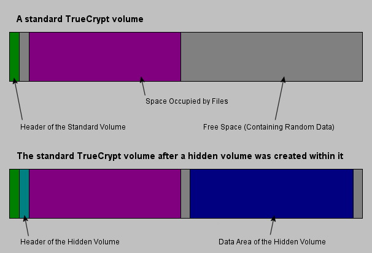

前几天写了“文件加密的扫盲介绍”，普及了文件加密的重要性以及挑选加密工具的注意事项。貌似这个话题还比较受欢迎（获得很多转载），而且有读者在评论中让俺推荐一款文件加密软件。今天就来介绍一下，个人比较喜欢的文件加密工具——TrueCrypt。
TrueCrypt 项目已经在2014年死亡，当时俺写了一篇《分析一下 TrueCrypt 之死（自杀 or 他杀？）——兼谈应对措施》。
又过了一年（2015），俺介绍了 TrueCrypt 的【完美替代品】，参见《扫盲 VeraCrypt——跨平台的 TrueCrypt 替代品》。
虽然 TrueCrypt 已经死亡，但是它的替代品（VeraCrypt）完全兼容 TrueCrypt【所有的】功能。所以本文的内容以及下面列出的系列教程，依然是有用滴！
本文主要介绍 TrueCrypt 的特色，【不是】详细的教程。更详细的使用介绍，参见下面列出的4篇。
如果你已经在使用 TrueCrypt（或者它的“衍生品 or 替代品”），可以参考俺专门写的《TrueCrypt 使用经验》系列博文，链接的目录如下（需翻墙）：
《TrueCrypt 使用经验[1]：关于加密算法和加密盘的类型》
《TrueCrypt 使用经验[2]：关于加密盘的密码认证和 KeyFiles 认证》
《TrueCrypt 使用经验[3]：关于加密盘的破解和防范措施》
《TrueCrypt 使用经验[4]：关于隐藏卷的使用和注意事项》
简单来说，TrueCrypt 是用来对整个硬盘或某个分区进行实时加密的工具。它具有非常高的知名度和用户使用量。
更难能可贵的是——它【公开了源代码】！对于磁盘加密工具，很忌讳软件中有【后门】。由于 TrueCrypt 公开源代码，因此第三方可以审查其代码（业界行话叫做“代码审计”），这就大大降低了“潜藏后门”的风险。
俺在前一个帖子里，提到了挑选文件加密软件的几个注意事项。咱们首先来对照一下，TrueCrypt 是否符合这些要求。
要判断某个软件的知名度高不高，一个简单的办法，就是到 Google 里搜索一下该软件。（除非碰到同名的情况）通常 Google 的搜索结果数，可以大致反映出该软件的知名度。列位看官可以自己去 Google 搜索一下便知。
说到 TrueCrypt 的口碑，俺可以举一个例子。据说老美的 FBI 拿到某个犯罪分子用 TrueCrypt 加密的数据，结果 FBI 里的一堆密码专家都无计可施（懂洋文的同学可以看“这里”的报道）。
TrueCrypt 具体有多少用户，俺说不上来。不过，据说欧美很多经营色情网站的家伙，就是采用 TrueCrypt 来规避法律风险的——他们把色情内容用 TrueCrypt 加密后再放到托管的服务器上，警察即便拿到了也无法解密，也就无法举证。
TrueCrypt 内置了 AES（Rijndael）, Serpent, Twofish 这三种主流的加密算法。
AES（全称：Advanced Encryption Standard）是美国官方在2002年确定的加密标准，其名气自不必多说。另外两种加密算法，名气也很大。当初，Rijndael, Serpent, Twofish 这3者都是 AES 的主要竞标者，最后是 Rijndael 中选（如今说到 AES 就是指 Rijndael）。
你可以单独使用这3种的某一种，也可以【组合使用】这3种加密算法，以得到【更强】的加密效果（但速度也更慢）。可用的算法组合参见下图：

这方面是 TrueCrypt 的强项。它除了支持虚拟硬盘/虚拟分区的加密（具体的概念，请看前一个帖子的介绍），还可以加密某个物理分区甚至整个物理硬盘；除了可以针对硬盘进行加密，还可以针对U盘（USB flash drive）加密。
另外，它还支持隐含卷，隐藏操作系统等功能（俺后面会介绍）。
TrueCrypt 是开源的，也是免费的。
“开源的好处”，前面已经提到了。
它目前支持 Windows，Mac OS X，Linux 这3种主流操作系统。对于微软系，从 Windows 2000 一直到 Windows 7 都支持。常见的操作系统，基本上都涵盖了。
从上面列举的可以看出，TrueCrypt 完全满足俺挑选文件加密工具的要求。
说实话，满足上述要求的文件加密工具，绝不止 TrueCrypt 这一款。为啥俺首先推荐它捏？那是因为 TrueCrypt 还有另外几个很不错的特色。
大部分加密软件都会涉及到加密用的口令。口令是一个令人很纠结的东西——设得太复杂怕忘了，设得太简单怕被破了。俺之前还专门写过一个帖子——如何构造安全的口令——教你如何构造好记又难破解的口令。
有了 TrueCrypt 之后，口令的问题就不成为问题了。因为 TrueCrypt 提供了 KeyFiles 功能。简单来说，就是用一个或多个文件作为加密的认证因素（类似于口令）。这样一来，你只要记住加密用的文件（KeyFiles）即可。对于破解的人，就很难再用传统的“暴力破解口令”的方式了。
用刚才提到的 KeyFiles 功能，你就可以玩“双因素认证”的把戏了。假设你想保护一个很重要的加密卷，那么，你可以同时设置口令和 KeyFiles。这样一来，如果要解开这个加密卷，就需要同时知道口令并拿到 KeyFiles。这大大提高了攻击者的难度（提升了好几【数量级】）。
另一个很吸引人的特色，是关于“隐藏卷”的功能。
所谓的隐藏卷，就是在一个加密卷里面再创建一个加密卷。外层的那个加密卷是“明”的（也叫“宿主卷”）；内层的那个，是“暗”的（叫“隐藏卷”）。这两个加密卷必须使用【不同】的“认证因素”（要么密码不同，要么 KeyFiles 不同）。在物理上，你只能看到外层的“卷文件”；内层的卷，是【看不到】独立的“卷文件”滴。
当你要打开加密卷的时候，如果输入的是外层的“认证因素”（密码、KeyFiles），那就打开外层的卷（这时候看不到内层的数据）；反之，输入内层的“认证因素”，则打开内层的卷（这时候看不到外层的数据）。

（隐藏卷存储示意图——利用外层卷的剩余空间来存储内层卷的数据）
可能有同学会纳闷：这么玩，有啥用捏？请看下一节——Plausible Deniability
很抱歉，这个洋文，俺没有找到合适的中文来表达它的含义（网上有人翻译为：“冠冕堂皇地拒绝”，俺觉得不够贴切）。下面，俺用一个虚构的小故事让大伙儿明白，什么是“Plausible Deniability”。
话说有一个 GG 叫小黑，他有一个 MM 叫小白。小黑喜欢背着小白偷看毛片，而且还喜欢把毛片收藏起来；而小白对毛片很反感。为了不让小白知道，小黑把毛片都用 TrueCrypt 加密保存。小黑GG的安全意识很高，他先创建了一个外层的加密卷（“明”的），里面放一些无光痛痒的文件。然后在外层加密卷中，再创建一个隐含加密卷（“暗”的），里面保存毛片。
有一天，小白也不知道通过什么途径，发现小黑背着她，加密保存了一些文件。于是小白就威胁小黑，让小黑打开加密卷给她看一看。这时候，隐藏卷的好处就体现出来了。小黑可以装做很不情愿的样子，然后输入外层加密卷的口令，让小白看一看外层卷的东西（都是些无关紧要的文件）。小黑就这样顺利蒙混过关了 :-)
这就是利用隐藏卷，实现“Plausible Deniability”的典型案例。你可以在受到胁迫的时候，用隐藏卷功能来“丢车保帅”，而胁迫你的人，未必能看出破绽。
隐藏操作系统的功能，本质上跟隐藏卷类似——也是有【一明一暗】两个加密卷，分别装两个操作系统。“明”的操作系统就放一些无关痛痒的文件，而那些敏感的文件都放到“暗”的操作系统中。
当你受到胁迫的时候，你就输入“明”的那个密码，进入那个“明”的操作系统。这样一来，“暗”的那个操作系统就不会暴露。
TrueCrypt 非常轻巧，安装程序仅有【3MB】多。安装之后，只有6个文件，如果去掉帮助文件和 license 文件，那就仅有4个文件了。
另外，TrueCrypt 还支持免安装运行——你可以把安装目录拷贝到U盘，然后就可以在另外一台电脑上使用它。
对于加密工具来说，软件的成熟度是非常重要的。如果软件不成熟，会导致如下2种重要的风险：
其1，假如软件有Bug并导致解密后的数据和加密前的数据不一样（数据损坏）——意味着你的数据（往往是重要的）丢失了。
其2，如果软件的数据加密过程有缺陷，可能导致加密数据被攻击者轻易破解——意味着你的数据（往往是见不得人的）被曝光。
而俺喜欢 TrueCrypt 的一个重要原因就是它的成熟度比较高。除了因为它研发时间长（截止本文发布时，已有7年多），除了因为它的口碑好，还有一个重要原因是软件的功能和文档做得很细致。（从一个软件的功能和相关文档，可以看出其研发团队的成熟度）
有这么多亮点功能，再配合较高的成熟度，TrueCrypt 绝对值得一试。
介绍完特色功能，最后再讲几个注意事项，以免大伙儿走弯路。
TrueCrypt 默认是西洋文的界面，那些不适应西洋文的同学，可以到官网去下载语言包（在“这里”）。
如果你要创建一个虚拟的加密卷。在创建的时候，一定要想好【卷的容量】——要足够大以便存放要加密的数据。目前 TureCrypt 没有提供“调整虚拟加密卷大小”的功能。也就是说，虚拟卷一旦创建，大小就固定了。万一你把这个卷的空间用完了，就只好另外创建一个新的，把原先的数据 copy 过去，再把老的删除。
好在现在硬盘已经是白菜价了，所以大伙儿创建虚拟卷的时候，尺寸估计得充裕一些，免得日后麻烦。
用什么样的文件作为 KeyFiles 比较好捏？有两种方法：1. 自己找一个文件；2. 让 TrueCrypt 帮你创建一个随机文件。
这两种方式的注意事项如下：
1. 如果让 TrueCrypt 帮你随机生成
那么，你一定要记得把生成的 KeyFiles 备份好。否则，一旦 KeyFiles 丢失了，那你就再也无法打开加密卷了。
2. 如果你自己选择 keyfile
要注意两点：其一、选作 keyfile 的文件不要太小（至少 10KB）；其二、二进制格式的文件比文本格式要好。还有一个经验：你可以选某个比较知名的文件做 keyfile。一来比较好记，二来也不容易搞丢。比方说，你很喜欢 Firefox，那你可以用 Firefox 的安装文件作为 keyfile。万一搞丢了，还可以再去 Firefox 官网下载。
为了让安全性更高些，你可以把 KeyFiles 跟加密卷分开存放。如果你的加密卷在电脑上，那建议你把 KeyFiles 保存在一个随身携带的U盘或者手机上（现在大部分手机都可以当U盘用）。
刚才聊“Plausible Deniability”的时候，大伙儿应该已经明白“隐藏卷”的妙用了。再顺便说一下使用隐藏卷的注意事项。
由于隐藏卷是存储在外层卷（宿主卷）的【剩余空间】。理论上讲，当你往“外层卷”写入数据时，有可能（存在某种概率）会破坏隐藏卷。TrueCrypt 当然早就考虑到了这点，并提供了一种保护机制。当你想在“外层卷”写人数据，但是又不希望破坏内层卷，你就必须在打开卷的时候，同时输入【内外2个卷】的认证因素（密码、KeyFiles）。这时候，TrueCrypt 会打开外层卷，但是也会对隐含的内层卷进行暗中保护。一旦你在“外层卷”的写操作会影响到“内层卷”，TrueCrypt 会屏蔽掉这个“写操作”，然后提示你：写入失败。
当然啦，你在受到胁迫的时候，千万【不要】输入内层卷的密码，否则就露馅啦！
有些人喜欢把加密卷和 TrueCrypt 程序一起放到U盘上。然后，随便找一台电脑插上，就可以运行 TrueCrypt 并打开加密卷。这样的好处是——相当于一个移动硬盘，还不怕丢失。
但是这么干有一个风险。如果你在一台不安全的电脑上运行 TrueCrypt，万一这台电脑上被植入了木马，万一这个木马还具有 Key Logger（键盘记录）的功能，那你的加密卷口令就有可能被盗取。
看完本文之后，如果你决定要用 TrueCrypt，建议你先花点时间看看它的使用手册。那手册写得可真好，不光介绍了 TrueCrypt 的使用，还介绍了很多信息安全方面的知识（可惜是洋文的）。
不擅长看洋文的同学，请翻到本文开头，去看《TrueCrypt 使用经验》系列博文。
俺博客上，和本文相关的帖子（需翻墙）：
《扫盲 VeraCrypt——跨平台的 TrueCrypt 替代品》
《文件加密的扫盲介绍》
《文件备份技巧：组合“虚拟加密盘”与“网盘”》
《扫盲 dm-crypt——多功能 Linux 磁盘加密工具（兼容 TrueCrypt 和 VeraCrypt）》
《扫盲 Linux 逻辑卷管理（LVM）——兼谈 RAID 以及“磁盘加密工具的整合”》
《如何用“磁盘加密”对抗警方的【取证软件】和【刑讯逼供】，兼谈数据删除技巧》
《分析一下 TrueCrypt 之死（自杀 or 他杀？）——兼谈应对措施》
★事先声明
TrueCrypt 项目已经在2014年死亡，当时俺写了一篇《分析一下 TrueCrypt 之死（自杀 or 他杀？）——兼谈应对措施》。
又过了一年（2015），俺介绍了 TrueCrypt 的【完美替代品】，参见《扫盲 VeraCrypt——跨平台的 TrueCrypt 替代品》。
虽然 TrueCrypt 已经死亡，但是它的替代品（VeraCrypt）完全兼容 TrueCrypt【所有的】功能。所以本文的内容以及下面列出的系列教程，依然是有用滴！
本文主要介绍 TrueCrypt 的特色，【不是】详细的教程。更详细的使用介绍，参见下面列出的4篇。
如果你已经在使用 TrueCrypt（或者它的“衍生品 or 替代品”），可以参考俺专门写的《TrueCrypt 使用经验》系列博文，链接的目录如下（需翻墙）：
《TrueCrypt 使用经验[1]：关于加密算法和加密盘的类型》
《TrueCrypt 使用经验[2]：关于加密盘的密码认证和 KeyFiles 认证》
《TrueCrypt 使用经验[3]：关于加密盘的破解和防范措施》
《TrueCrypt 使用经验[4]：关于隐藏卷的使用和注意事项》
★TrueCrypt 是啥玩意儿？
简单来说，TrueCrypt 是用来对整个硬盘或某个分区进行实时加密的工具。它具有非常高的知名度和用户使用量。
更难能可贵的是——它【公开了源代码】！对于磁盘加密工具，很忌讳软件中有【后门】。由于 TrueCrypt 公开源代码，因此第三方可以审查其代码（业界行话叫做“代码审计”），这就大大降低了“潜藏后门”的风险。
★回顾一下挑选加密工具的注意事项
俺在前一个帖子里，提到了挑选文件加密软件的几个注意事项。咱们首先来对照一下，TrueCrypt 是否符合这些要求。
◇知名度高，口碑好
要判断某个软件的知名度高不高，一个简单的办法，就是到 Google 里搜索一下该软件。（除非碰到同名的情况）通常 Google 的搜索结果数，可以大致反映出该软件的知名度。列位看官可以自己去 Google 搜索一下便知。
说到 TrueCrypt 的口碑，俺可以举一个例子。据说老美的 FBI 拿到某个犯罪分子用 TrueCrypt 加密的数据，结果 FBI 里的一堆密码专家都无计可施（懂洋文的同学可以看“这里”的报道）。
◇有较多的用户使用
TrueCrypt 具体有多少用户，俺说不上来。不过，据说欧美很多经营色情网站的家伙，就是采用 TrueCrypt 来规避法律风险的——他们把色情内容用 TrueCrypt 加密后再放到托管的服务器上，警察即便拿到了也无法解密，也就无法举证。
◇支持主流的加密算法
TrueCrypt 内置了 AES（Rijndael）, Serpent, Twofish 这三种主流的加密算法。
AES（全称：Advanced Encryption Standard）是美国官方在2002年确定的加密标准，其名气自不必多说。另外两种加密算法，名气也很大。当初，Rijndael, Serpent, Twofish 这3者都是 AES 的主要竞标者，最后是 Rijndael 中选（如今说到 AES 就是指 Rijndael）。
你可以单独使用这3种的某一种，也可以【组合使用】这3种加密算法，以得到【更强】的加密效果（但速度也更慢）。可用的算法组合参见下图：
◇要能支持虚拟盘/虚拟分区
这方面是 TrueCrypt 的强项。它除了支持虚拟硬盘/虚拟分区的加密（具体的概念，请看前一个帖子的介绍），还可以加密某个物理分区甚至整个物理硬盘；除了可以针对硬盘进行加密，还可以针对U盘（USB flash drive）加密。
另外，它还支持隐含卷，隐藏操作系统等功能（俺后面会介绍）。
◇最好是免费且开源的
TrueCrypt 是开源的，也是免费的。
“开源的好处”，前面已经提到了。
◇最好支持多种操作系统
它目前支持 Windows，Mac OS X，Linux 这3种主流操作系统。对于微软系，从 Windows 2000 一直到 Windows 7 都支持。常见的操作系统，基本上都涵盖了。
◇总结
从上面列举的可以看出，TrueCrypt 完全满足俺挑选文件加密工具的要求。
★TrueCrypt 的几个特色
说实话，满足上述要求的文件加密工具，绝不止 TrueCrypt 这一款。为啥俺首先推荐它捏？那是因为 TrueCrypt 还有另外几个很不错的特色。
◇KeyFiles
大部分加密软件都会涉及到加密用的口令。口令是一个令人很纠结的东西——设得太复杂怕忘了，设得太简单怕被破了。俺之前还专门写过一个帖子——如何构造安全的口令——教你如何构造好记又难破解的口令。
有了 TrueCrypt 之后，口令的问题就不成为问题了。因为 TrueCrypt 提供了 KeyFiles 功能。简单来说，就是用一个或多个文件作为加密的认证因素（类似于口令）。这样一来，你只要记住加密用的文件（KeyFiles）即可。对于破解的人，就很难再用传统的“暴力破解口令”的方式了。
所谓的“暴力破解口令”，就是把所有可能的口令组合都尝试一遍。比方说，你的口令只有小写字母，而且你的口令只有8个字符，那么所有可能的组合也就是26的8次方。虽然26的8次方挺大，但是用计算机进行穷举，用不了太长时间也可以全部尝试完。
◇双因素认证
用刚才提到的 KeyFiles 功能，你就可以玩“双因素认证”的把戏了。假设你想保护一个很重要的加密卷，那么，你可以同时设置口令和 KeyFiles。这样一来，如果要解开这个加密卷，就需要同时知道口令并拿到 KeyFiles。这大大提高了攻击者的难度（提升了好几【数量级】）。
◇隐藏卷（Hidden Volume）
另一个很吸引人的特色，是关于“隐藏卷”的功能。
所谓的隐藏卷，就是在一个加密卷里面再创建一个加密卷。外层的那个加密卷是“明”的（也叫“宿主卷”）；内层的那个，是“暗”的（叫“隐藏卷”）。这两个加密卷必须使用【不同】的“认证因素”（要么密码不同，要么 KeyFiles 不同）。在物理上，你只能看到外层的“卷文件”；内层的卷，是【看不到】独立的“卷文件”滴。
当你要打开加密卷的时候，如果输入的是外层的“认证因素”（密码、KeyFiles），那就打开外层的卷（这时候看不到内层的数据）；反之，输入内层的“认证因素”，则打开内层的卷（这时候看不到外层的数据）。
（隐藏卷存储示意图——利用外层卷的剩余空间来存储内层卷的数据）
可能有同学会纳闷：这么玩，有啥用捏？请看下一节——Plausible Deniability
◇Plausible Deniability
很抱歉，这个洋文，俺没有找到合适的中文来表达它的含义（网上有人翻译为：“冠冕堂皇地拒绝”，俺觉得不够贴切）。下面，俺用一个虚构的小故事让大伙儿明白，什么是“Plausible Deniability”。
话说有一个 GG 叫小黑，他有一个 MM 叫小白。小黑喜欢背着小白偷看毛片，而且还喜欢把毛片收藏起来；而小白对毛片很反感。为了不让小白知道，小黑把毛片都用 TrueCrypt 加密保存。小黑GG的安全意识很高，他先创建了一个外层的加密卷（“明”的），里面放一些无光痛痒的文件。然后在外层加密卷中，再创建一个隐含加密卷（“暗”的），里面保存毛片。
有一天，小白也不知道通过什么途径，发现小黑背着她，加密保存了一些文件。于是小白就威胁小黑，让小黑打开加密卷给她看一看。这时候，隐藏卷的好处就体现出来了。小黑可以装做很不情愿的样子，然后输入外层加密卷的口令，让小白看一看外层卷的东西（都是些无关紧要的文件）。小黑就这样顺利蒙混过关了 :-)
这就是利用隐藏卷，实现“Plausible Deniability”的典型案例。你可以在受到胁迫的时候，用隐藏卷功能来“丢车保帅”，而胁迫你的人，未必能看出破绽。
◇隐藏操作系统（Hidden Operating System）
隐藏操作系统的功能，本质上跟隐藏卷类似——也是有【一明一暗】两个加密卷，分别装两个操作系统。“明”的操作系统就放一些无关痛痒的文件，而那些敏感的文件都放到“暗”的操作系统中。
当你受到胁迫的时候，你就输入“明”的那个密码，进入那个“明”的操作系统。这样一来，“暗”的那个操作系统就不会暴露。
◇短小精悍
TrueCrypt 非常轻巧，安装程序仅有【3MB】多。安装之后，只有6个文件，如果去掉帮助文件和 license 文件，那就仅有4个文件了。
另外，TrueCrypt 还支持免安装运行——你可以把安装目录拷贝到U盘，然后就可以在另外一台电脑上使用它。
◇成熟度较高
对于加密工具来说，软件的成熟度是非常重要的。如果软件不成熟，会导致如下2种重要的风险：
其1，假如软件有Bug并导致解密后的数据和加密前的数据不一样（数据损坏）——意味着你的数据（往往是重要的）丢失了。
其2，如果软件的数据加密过程有缺陷，可能导致加密数据被攻击者轻易破解——意味着你的数据（往往是见不得人的）被曝光。
而俺喜欢 TrueCrypt 的一个重要原因就是它的成熟度比较高。除了因为它研发时间长（截止本文发布时，已有7年多），除了因为它的口碑好，还有一个重要原因是软件的功能和文档做得很细致。（从一个软件的功能和相关文档，可以看出其研发团队的成熟度）
有这么多亮点功能，再配合较高的成熟度，TrueCrypt 绝对值得一试。
★使用 TrueCrypt 的注意事项
介绍完特色功能，最后再讲几个注意事项，以免大伙儿走弯路。
◇关于“中文界面”
TrueCrypt 默认是西洋文的界面，那些不适应西洋文的同学，可以到官网去下载语言包（在“这里”）。
◇关于“虚拟卷的尺寸”
如果你要创建一个虚拟的加密卷。在创建的时候，一定要想好【卷的容量】——要足够大以便存放要加密的数据。目前 TureCrypt 没有提供“调整虚拟加密卷大小”的功能。也就是说，虚拟卷一旦创建，大小就固定了。万一你把这个卷的空间用完了，就只好另外创建一个新的，把原先的数据 copy 过去，再把老的删除。
好在现在硬盘已经是白菜价了，所以大伙儿创建虚拟卷的时候，尺寸估计得充裕一些，免得日后麻烦。
◇关于“KeyFiles”
用什么样的文件作为 KeyFiles 比较好捏？有两种方法：1. 自己找一个文件；2. 让 TrueCrypt 帮你创建一个随机文件。
这两种方式的注意事项如下：
1. 如果让 TrueCrypt 帮你随机生成
那么，你一定要记得把生成的 KeyFiles 备份好。否则，一旦 KeyFiles 丢失了，那你就再也无法打开加密卷了。
2. 如果你自己选择 keyfile
要注意两点：其一、选作 keyfile 的文件不要太小（至少 10KB）；其二、二进制格式的文件比文本格式要好。还有一个经验：你可以选某个比较知名的文件做 keyfile。一来比较好记，二来也不容易搞丢。比方说，你很喜欢 Firefox，那你可以用 Firefox 的安装文件作为 keyfile。万一搞丢了，还可以再去 Firefox 官网下载。
为了让安全性更高些，你可以把 KeyFiles 跟加密卷分开存放。如果你的加密卷在电脑上，那建议你把 KeyFiles 保存在一个随身携带的U盘或者手机上（现在大部分手机都可以当U盘用）。
◇关于“隐藏卷”
刚才聊“Plausible Deniability”的时候，大伙儿应该已经明白“隐藏卷”的妙用了。再顺便说一下使用隐藏卷的注意事项。
由于隐藏卷是存储在外层卷（宿主卷）的【剩余空间】。理论上讲，当你往“外层卷”写入数据时，有可能（存在某种概率）会破坏隐藏卷。TrueCrypt 当然早就考虑到了这点，并提供了一种保护机制。当你想在“外层卷”写人数据，但是又不希望破坏内层卷，你就必须在打开卷的时候，同时输入【内外2个卷】的认证因素（密码、KeyFiles）。这时候，TrueCrypt 会打开外层卷，但是也会对隐含的内层卷进行暗中保护。一旦你在“外层卷”的写操作会影响到“内层卷”，TrueCrypt 会屏蔽掉这个“写操作”，然后提示你：写入失败。
当然啦，你在受到胁迫的时候，千万【不要】输入内层卷的密码，否则就露馅啦！
◇关于“免安装运行”
有些人喜欢把加密卷和 TrueCrypt 程序一起放到U盘上。然后，随便找一台电脑插上，就可以运行 TrueCrypt 并打开加密卷。这样的好处是——相当于一个移动硬盘，还不怕丢失。
但是这么干有一个风险。如果你在一台不安全的电脑上运行 TrueCrypt，万一这台电脑上被植入了木马，万一这个木马还具有 Key Logger（键盘记录）的功能，那你的加密卷口令就有可能被盗取。
★关于 TrueCrypt 的进阶使用
看完本文之后，如果你决定要用 TrueCrypt，建议你先花点时间看看它的使用手册。那手册写得可真好，不光介绍了 TrueCrypt 的使用，还介绍了很多信息安全方面的知识（可惜是洋文的）。
不擅长看洋文的同学，请翻到本文开头，去看《TrueCrypt 使用经验》系列博文。
俺博客上，和本文相关的帖子（需翻墙）：
《扫盲 VeraCrypt——跨平台的 TrueCrypt 替代品》
《文件加密的扫盲介绍》
《文件备份技巧：组合“虚拟加密盘”与“网盘”》
《扫盲 dm-crypt——多功能 Linux 磁盘加密工具（兼容 TrueCrypt 和 VeraCrypt）》
《扫盲 Linux 逻辑卷管理（LVM）——兼谈 RAID 以及“磁盘加密工具的整合”》
《如何用“磁盘加密”对抗警方的【取证软件】和【刑讯逼供】，兼谈数据删除技巧》
《分析一下 TrueCrypt 之死（自杀 or 他杀？）——兼谈应对措施》
版权声明
本博客所有的原创文章，作者皆保留版权。转载必须包含本声明，保持本文完整，并以超链接形式注明作者编程随想和本文原始地址：
https://program-think.blogspot.com/2011/05/recommend-truecrypt.html
本博客所有的原创文章，作者皆保留版权。转载必须包含本声明，保持本文完整，并以超链接形式注明作者编程随想和本文原始地址：
https://program-think.blogspot.com/2011/05/recommend-truecrypt.html